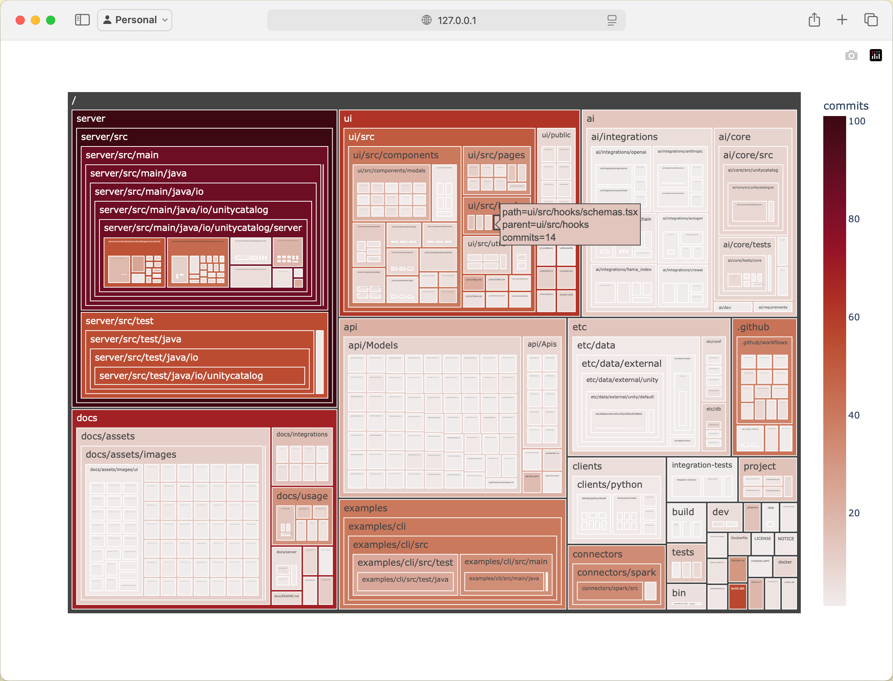
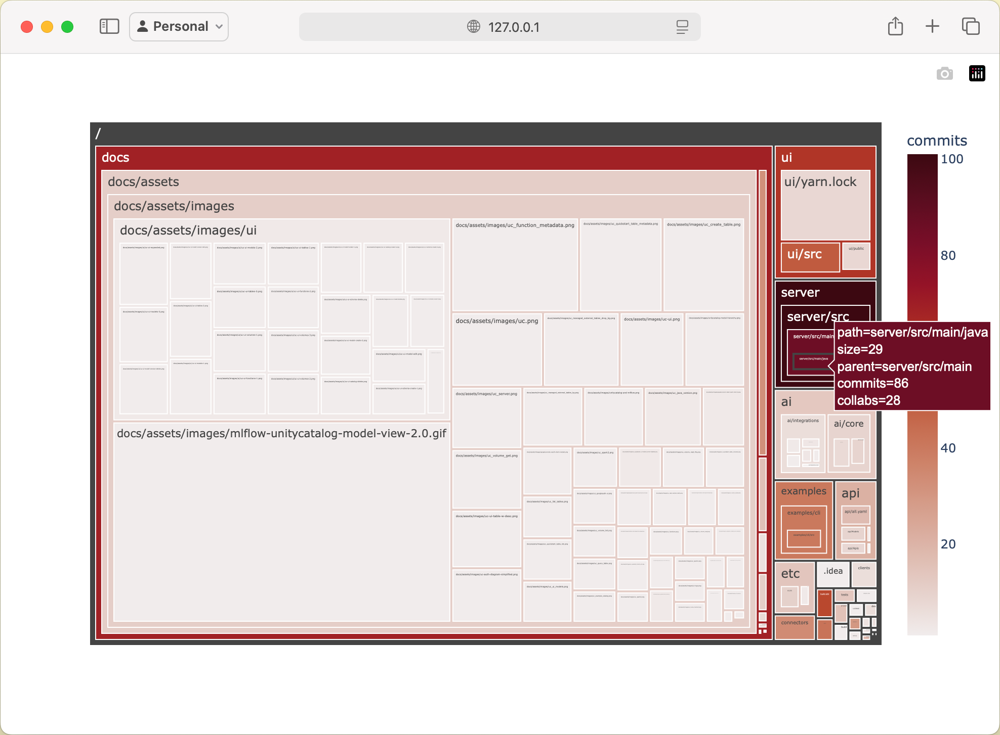

Some time ago, a new colleague joined our department and started working on a platform we provide. During his initial days, I noticed he was using an interactive Python shell to create treemap visualizations of the project's git history.
The visualizations looked something like this.
Visualization of Unity Catalog repository using custom code snippet.
This immediately sparked my interest. Normally, when starting to learn about a new codebase, I would also look at git history, but I would mainly focus on basic information like the number of commits, contributors, stars and so on. However, these visualizations offered a new interesting perspective on understanding how the repository evolved over time.
What does this help with?
Creating these visualizations helped the colleague to see where the core issue of the project is being addressed by showing which files are edited most, and contain the largest amount of collaborators. Based on this information its easier to find out which parts of the code are more interesting, and likely to be touched in the future. Therefore it might make sense to learn a bit more about these frequently used files before starting to work on the project.
I sadly did not remember the exact commands the colleague used.
git-truck
Later I found out about git-truck from another colleague. It creates very similar visualizations and is overall a simple and convenient tool. It is installed and executed by one simple command npx -y git-truck. It allows to use filters to highlight different information about the project. The tool is private by design, free and open source. I am a big fan of it and use it fairly frequently.
Visualizations by git-truck look like this.
Visualization of Unity Catalog repository using git-truck.
Homemade git-truck
Git-truck is an amazing tool, but I was still interested in knowing how to create such magic just by writing a couple of lines in an interactive Python shell.
When the back then new colleague was using his own make shift git-truck, I remember he used a python library to interact with git and another python library to render the filesystem as a treemap.
After a bit of searching I figured a great combination is GitPython combined with Plotly.
These dependencies can by installed by executing the following command: pip install GitPython plotly.
GitPython is a simple library which allows for interaction with git repository directly from Python. Traversing through tree of files and directories or iterating through the git commit history can also be easily done by using this library.
The following code snippet creates a list which contains some additional information about all files and directories.
import os
from git import Repo
repo = Repo("./unitycatalog")
blobs = [{
'parent': os.path.dirname(blob.path) or "/",
'path': blob.path,
'commits': len(commits := list(repo.iter_commits(paths=blob.path))),
} for blob in repo.tree().traverse()]
Plotly can be used to create simple visualizations of this tree in a browser. It allows for easy configuration based on which its clear to highlight different information about the project.
The following code snippet renders the previously calculated list as a treemap. You already saw this visualization in the first part of this page.
import plotly.express as px
px.treemap(
blobs,
names='path',
parents='parent',
color='commits',
color_continuous_scale='amp',
).show()
I especially like the simplicity of these two libraries, and that its possible to quickly change their configuration to render different interesting data. I also like that the whole configuration can be done in one very simple Python script.
For instance the size of tiles can depend on the sizes of files. Or we can also render the amount of collaborators on each specific file.
This can be achieved by editing the snippet into the following form.
import os
import plotly.express as px
from git import Repo
repo = Repo("./unitycatalog")
blobs = [{
'parent': os.path.dirname(blob.path) or "/",
'path': blob.path,
'size': blob.size,
'commits': len(commits := list(repo.iter_commits(paths=blob.path))),
'collabs': len(set(c.author.email for c in commits))
} for blob in repo.tree().traverse()]
px.treemap(
blobs,
names='path',
parents='parent',
values='size',
hover_data=['commits', 'collabs'],
color='commits',
color_continuous_scale='amp',
).show()
Which generates the following visualization.
Visualization of Unity Catalog repository using custom code snippet with additional information.
Performance Considerations
These couple of lines of Python code can be useful when analyzing small git repos. However if you try to run this code snippet against a larger code base, like trying visualize the git history of CPython, it will take a very long time. I canceled the execution after couple of minutes. Git-truck loads even larger projects very quickly, therefore it is faster to install and execute git-truck compared to running the custom Python script and waiting for it to render everything.
TL;DR
This post discussed two approaches of visualizing git repositories through treemaps:
- Using git-truck, a convenient open-source tool that quickly creates repository visualizations with a simple command.
- Creating custom visualizations using Python, by combining GitPython and Plotly libraries in just a few lines of code.
These visualization techniques help developers understand repository structure, identify frequently modified files, and locate areas of high collaboration, making it easier to navigate new codebases.